23 Review: Partial Derivatives and Comparative Statics
23.1 Partial Derivatives
23.1.1 Definition
Consider a function
\[y = f(x_1, x_2, \ldots, x_n)\]
where the variables \(x_i\) (\(i = 1, 2, \ldots, n\)) are all independent of one another, so each can vary on its own without affecting the others.
If \(x_1\) changes by \(\Delta x_1\) while \(x_2, \ldots, x_n\) remain fixed, the difference quotient is:
\[\frac{\Delta y}{\Delta x_1} = \frac{f(x_1 + \Delta x_1,\, x_2,\, \ldots,\, x_n) - f(x_1,\, x_2,\, \ldots,\, x_n)}{\Delta x_1}\]
Taking the limit as \(\Delta x_1 \to 0\) gives the partial derivative of \(y\) with respect to \(x_1\):
\[\frac{\partial y}{\partial x_1} = \lim_{\Delta x_1 \to 0} \frac{f(x_1 + \Delta x_1, x_2, \ldots, x_n) - f(x_1, x_2, \ldots, x_n)}{\Delta x_1}\]
The process of taking partial derivatives is called partial differentiation.
23.1.2 Notation
Instead of \(d\) (as in \(dy/dx\)), the symbol \(\partial\) is used:
\[\frac{\partial y}{\partial x_i} = \frac{\partial}{\partial x_i} f = \partial_{x_i} y\]
For \(y = f(x, z, w)\), partial derivatives are denoted \(f_x\), \(f_z\), and \(f_w\).
23.1.3 Techniques of Partial Differentiation
The key rule: treat all other variables as constants, then differentiate normally using the usual rules.
Example 1. Given \(y = f(x_1, x_2) = 3x_1^2 + x_1 x_2 + 4x_2^2\), find the partial derivatives.
\[\frac{\partial y}{\partial x_1} = 6x_1 + x_2, \qquad \frac{\partial y}{\partial x_2} = x_1 + 8x_2\]
Example 2. Given \(z = f(x, y) = (x + 4)(3y + 2x)\), find the partial derivatives.
Expand: \(z = 3xy + 2x^2 + 12y + 8x\)
\[f_x = 3y + 4x + 8, \qquad f_y = 3x + 12\]
23.2 Visualizing Different Functions
Linear: has a constant slope, and the second derivative is zero. This means it is both concave and convex (weakly), but neither strictly. In economics, linear demand or supply curves assume a constant price sensitivity throughout. The curve() function is the cleanest way to plot a mathematical expression directly without creating a separate x-vector.
\(y=a_0+a_1x\)
a0 <- 2
a1 <- 0.8
curve(a0 + a1 * x,
from = -3, to = 3,
lwd = 2, col = "steelblue",
xlab = "x", ylab = "y",
main = "Linear: y = a0 + a1*x")
abline(h = 0, v = 0, col = "gray80", lty = 2)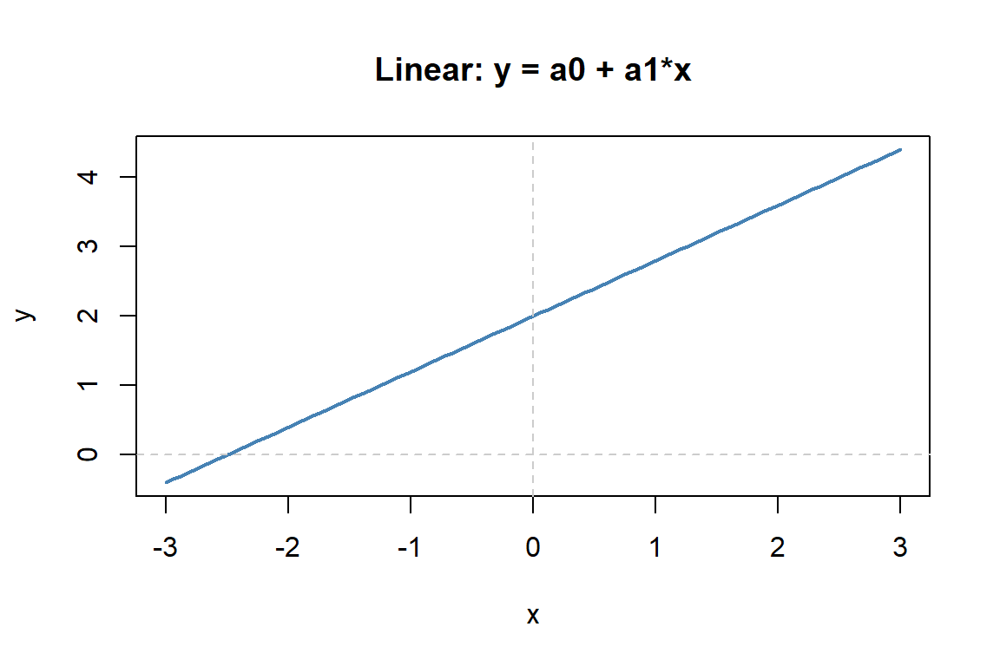
Quadratic: produces a parabola. Whether it opens upward or downward depends on the sign of a2: positive gives a convex (U-shaped) curve, negative gives a concave (∩-shaped) curve. The second derivative is 2*a2 — a constant — so curvature is the same everywhere. In economics, total cost functions are often quadratic (U-shaped average cost), and downward-opening quadratics appear in profit functions.
\(y=a_0+a_1x+a_2x^2\)
a0 <- 1; a1 <- -1; a2 <- 0.5
curve(a0 + a1*x + a2*x^2,
from = -3, to = 3,
lwd = 2, col = "steelblue",
xlab = "x", ylab = "y",
main = "Quadratic: y = a0 + a1*x + a2*x^2")
abline(h = 0, v = 0, col = "gray80", lty = 2)
# Vertex (minimum/maximum) at x = -a1 / (2*a2)
x_vertex <- -a1 / (2 * a2)
y_vertex <- a0 + a1*x_vertex + a2*x_vertex^2
points(x_vertex, y_vertex, pch = 19, col = "tomato")
text(x_vertex, y_vertex + 0.3,
paste0("vertex (", round(x_vertex,2), ", ", round(y_vertex,2), ")"),
cex = 0.8)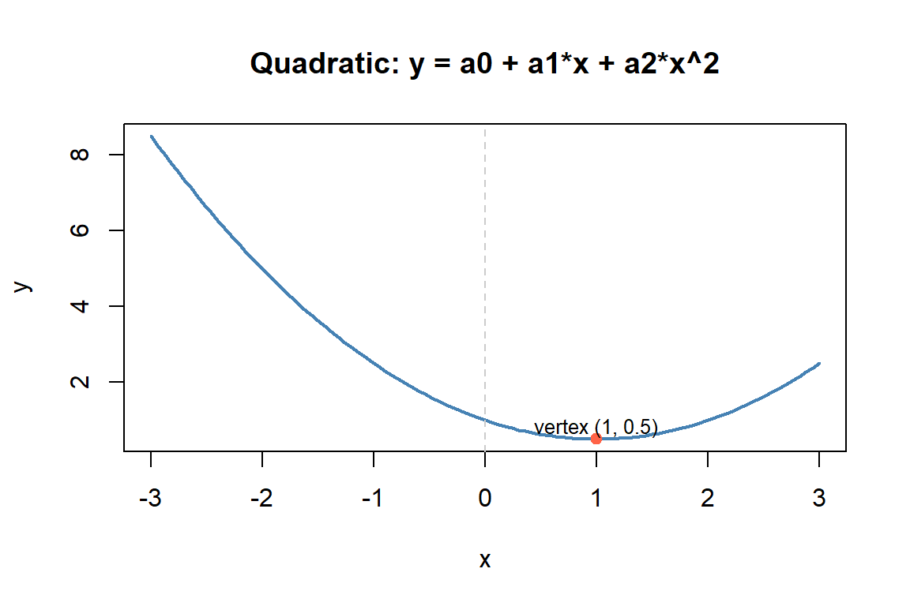
Cubic: changes concavity exactly once — at the inflection point, where f’’(x) = 0. To the left it may be convex; to the right, concave (or vice versa). This makes it ideal for modeling the three stages of production: initially increasing returns (convex), then diminishing returns (concave), then negative returns. The second derivative 6a3x + 2a2 changes sign at x = -a2/(3a3).
\(y=a_0+a_1x+a_2x^2+a_3x^3\)
a0 <- 0; a1 <- -0.75; a2 <- 0; a3 <- 0.25
curve(a0 + a1*x + a2*x^2 + a3*x^3,
from = -3, to = 3,
lwd = 2, col = "steelblue",
xlab = "x", ylab = "y",
main = "Cubic function")
abline(h = 0, v = 0, col = "gray80", lty = 2)
# Inflection point: f''(x) = 6*a3*x + 2*a2 = 0 → x = -a2/(3*a3)
x_infl <- -a2 / (3 * a3)
y_infl <- a0 + a1*x_infl + a2*x_infl^2 + a3*x_infl^3
points(x_infl, y_infl, pch = 17, col = "tomato", cex = 1.2)
text(x_infl + 0.2, y_infl, "inflection", cex = 0.8, adj = 0)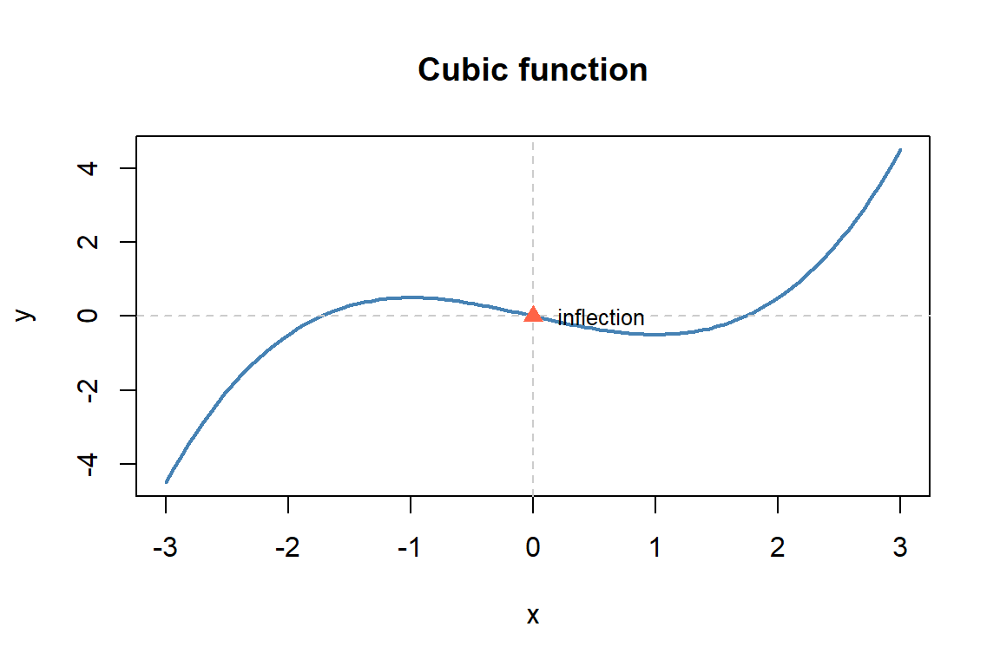
Sine: periodic with period 2π. Its second derivative is -sin(x), which alternates sign — so the function is concave on intervals where sin(x) > 0 and convex where sin(x) < 0. In economics, sine (and cosine) functions appear in models of cyclical behavior such as seasonal demand fluctuations or business cycle oscillations. pi is a built-in constant in R.
\(y=sin(x)\)
curve(sin(x),
from = -2*pi, to = 2*pi,
lwd = 2, col = "steelblue",
xlab = "x", ylab = "y",
main = "Sine: y = sin(x)")
abline(h = 0, col = "gray80", lty = 2)
# Mark inflection points (where f'' = -sin(x) = 0, i.e. x = kπ)
x_infl <- (-2:2) * pi
points(x_infl, sin(x_infl), pch = 17, col = "tomato")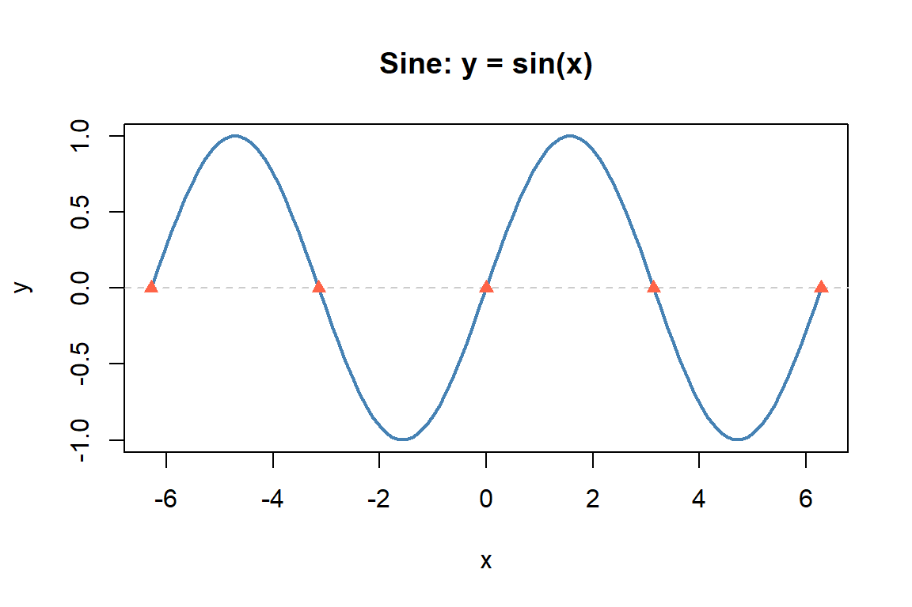
Cosine: the sine function shifted left by π/2. Its second derivative is -cos(x), so it is concave where cos(x) > 0 and convex where cos(x) < 0. In practice, cosine appears when a cyclical process starts at a peak (e.g., a price index at its highest point at t = 0). Plotting both sin and cos on one graph with lines() illustrates the phase relationship.
\(y=cos(x)\)
curve(cos(x),
from = -2*pi, to = 2*pi,
lwd = 2, col = "steelblue",
xlab = "x", ylab = "y",
main = "Cosine: y = cos(x)")
abline(h = 0, col = "gray80", lty = 2)
# Overlay sine for comparison
curve(sin(x), add = TRUE, lty = 2, col = "gray60")
legend("topright", legend = c("cos(x)", "sin(x)"),
lty = c(1, 2), col = c("steelblue", "gray60"),
bty = "n", cex = 0.85)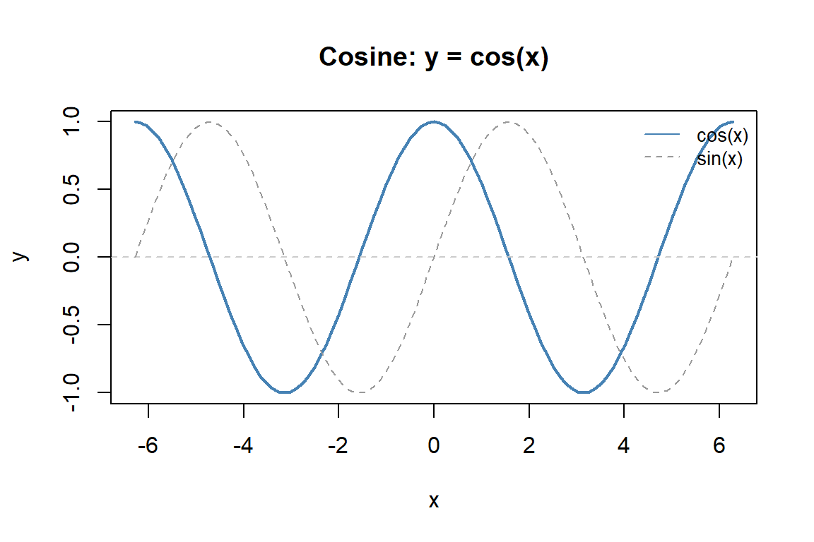
Rational: has two branches separated by a vertical asymptote at x = 0. For x > 0, the second derivative is 2/x³ > 0 — strictly convex. For x < 0, it is 2/x³ < 0 — strictly concave. In economics this shape appears in average cost curves (AC = TC/Q) and in downward-sloping demand. Since R would draw a spurious vertical line across the asymptote, we exclude x = 0 by plotting two separate segments using add = TRUE.
\(y=1/x\)
curve(1/x, from = 0.1, to = 4,
lwd = 2, col = "steelblue",
xlim = c(-4, 4), ylim = c(-5, 5),
xlab = "x", ylab = "y",
main = "Rational: y = 1/x")
# Second branch — use add = TRUE to avoid opening a new plot
curve(1/x, from = -4, to = -0.1,
add = TRUE, lwd = 2, col = "steelblue")
abline(h = 0, v = 0, col = "gray80", lty = 2)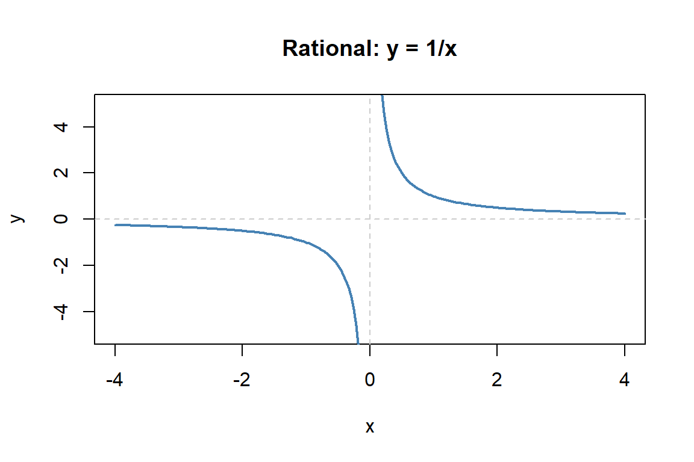
Exponential: exp(x) = eˣ is its own derivative — both f’(x) and f’’(x) equal eˣ, which is always positive. This makes it strictly increasing and strictly convex everywhere. In economics it models compound interest (A = P·e^(rt)), exponential population growth, and continuous discounting. The horizontal asymptote at y = 0 as x → -∞ is worth noting: output never reaches zero.
\(y=exp(x)\)
curve(exp(x),
from = -3, to = 2.5,
lwd = 2, col = "steelblue",
xlab = "x", ylab = "y",
main = "Exponential: y = exp(x)")
abline(h = 0, v = 0, col = "gray80", lty = 2)
# Tangent line at x = 1: slope = exp(1), intercept = exp(1) - exp(1)*1 = 0
abline(a = 0, b = exp(1), lty = 3, col = "tomato")
legend("topleft", legend = c("exp(x)", "tangent at x=1"),
lty = c(1, 3), col = c("steelblue", "tomato"),
bty = "n", cex = 0.85)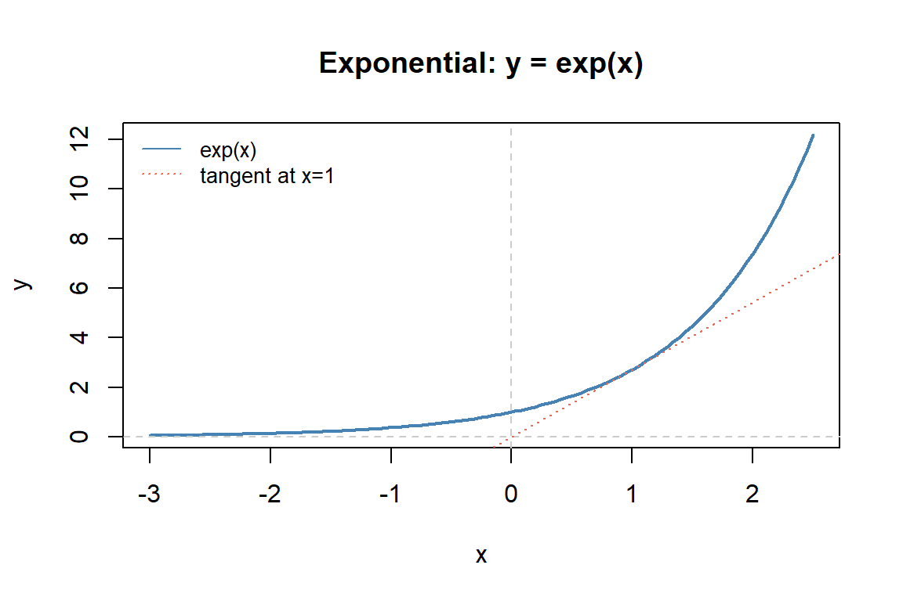
Logarithmic: only defined for x > 0. Its first derivative 1/x > 0 confirms it is always increasing, and its second derivative -1/x² < 0 confirms it is strictly concave — each extra unit of input yields a smaller and smaller increment in output. This is the formal definition of diminishing marginal utility. In R, log(x) computes the natural log; use log(x, base = 10) for log base 10. The vertical asymptote at x = 0 means the function is undefined (and returns -Inf) at zero.
\(y=log(x)\)
curve(log(x), # log() in R = natural log (ln)
from = 0.01, to = 8,
lwd = 2, col = "steelblue",
xlab = "x", ylab = "y",
main = "Logarithmic: y = ln(x)")
abline(h = 0, v = 0, col = "gray80", lty = 2)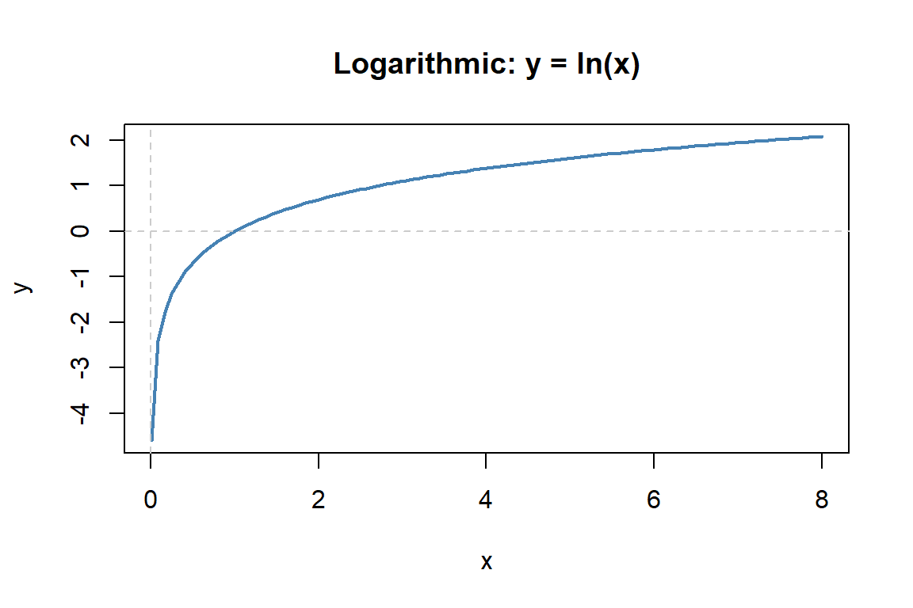
# Second derivative test: f''(x) = -1/x^2
x_check <- c(1, 2, 4)
f2 <- -1 / x_check^2
cat("f''(x) at x = 1, 2, 4:", round(f2, 4), "
")## f''(x) at x = 1, 2, 4: -1 -0.25 -0.062523.2.1 Marginal Analysis
In economics, derivatives describe changes “on the margin”:
- The derivative of a total cost function → marginal cost
- The derivative of a total revenue function → marginal revenue
- The partial derivative of a production function with respect to an input → marginal product of that input
23.2.2 Marginal Product of Labor and Capital
Given the production function:
\[Q = f(K, L) = K^{0.3} L^{0.7}\]
The marginal product of capital (\(MP_K\)) and marginal product of labor (\(MP_L\)) are:
\[MP_K = f_K = 0.3 K^{-0.7} L^{0.7}, \qquad MP_L = f_L = 0.7 K^{0.3} L^{-0.3}\]
Do these exhibit diminishing marginal products?
- \(\frac{\partial MP_K}{\partial K} = \frac{\partial^2 Q}{\partial K^2} = 0.3 \times (-0.7)\, K^{-1.7} L^{0.7} = -0.21\, K^{-1.7} L^{0.7} < 0\) ✓ diminishing
- \(\frac{\partial MP_L}{\partial L} = \frac{\partial^2 Q}{\partial L^2} = 0.7 \times (-0.3)\, K^{0.3} L^{-1.3} = -0.21\, K^{0.3} L^{-1.3} < 0\) ✓ diminishing
Let’s visualize these:
# Fix K = 16; vary L
K_fixed <- 16
L_vals <- seq(1, 100, by = 1)
MP_L <- 0.7 * K_fixed^0.3 * L_vals^(-0.3) # partial deriv wrt L
Q <- K_fixed^0.3 * L_vals^0.7 # total output
par(mfrow = c(1, 2))
plot(L_vals, Q,
type = "l", lwd = 2, col = "steelblue",
xlab = "Labor (L)", ylab = "Output (Q)",
main = "Total Output (K fixed)")
plot(L_vals, MP_L,
type = "l", lwd = 2, col = "tomato",
xlab = "Labor (L)", ylab = "MP_L",
main = "Marginal Product of Labor")
abline(h = 0, lty = 2, col = "gray50")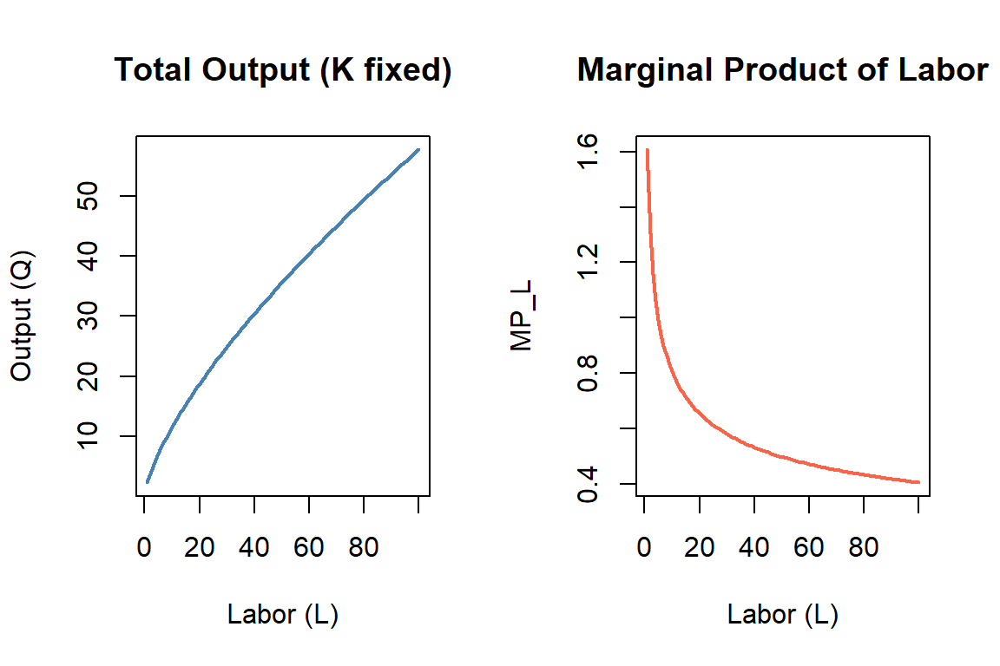
Economic interpretation: As more labor is added (holding capital fixed), total output increases but at a decreasing rate — the classic law of diminishing marginal returns. \(MP_L > 0\) throughout but is declining, confirmed by \(\partial MP_L / \partial L < 0\).
23.3 Comparative Statics
23.3.1 What Is Comparative Statics?
Comparative statics asks:
If one parameter changes, what happens to the equilibrium outcome?
We use partial derivatives to answer this question analytically, then visualize the result in R.
23.3.2 The Market Model
Consider a simple one-commodity market:
\[Q^d = a - bP \qquad (a, b > 0) \qquad \text{[Demand]}\] \[Q^s = -c + dP \qquad (c, d > 0) \qquad \text{[Supply]}\]
Setting \(Q^d = Q^s\) and solving:
\[P^* = \frac{a + c}{b + d}, \qquad Q^* = \frac{ad - bc}{b + d}\]
The endogenous variables \(P^*\) and \(Q^*\) are explicit functions of the four parameters \(a\), \(b\), \(c\), \(d\).
23.3.3 Partial Derivatives of P* with Respect to Each Parameter
Taking partial derivatives of \(P^* = \frac{a + c}{b + d}\):
\[\frac{\partial P^*}{\partial a} = \frac{1}{b+d} > 0\]
An increase in the demand intercept \(a\) (demand shifts right) raises the equilibrium price.
\[\frac{\partial P^*}{\partial b} = -\frac{a+c}{(b+d)^2} < 0\]
An increase in the demand slope \(b\) (demand becomes steeper/less elastic) lowers the equilibrium price.
\[\frac{\partial P^*}{\partial c} = \frac{1}{b+d} > 0\]
An increase in the supply intercept \(c\) (supply shifts left) raises the equilibrium price.
\[\frac{\partial P^*}{\partial d} = -\frac{a+c}{(b+d)^2} < 0\]
An increase in the supply slope \(d\) (supply becomes more elastic) lowers the equilibrium price.
23.3.4 Visualizing the Supply-Demand Equilibrium
Let’s first draw the baseline supply and demand curves and find equilibrium:
# Baseline parameters
a <- 60; b <- 2; c <- 10; d <- 1
# Equilibrium
P_star <- (a + c) / (b + d)
Q_star <- (a * d - b * c) / (b + d)
# Price range for plotting
P_seq <- seq(0, 35, length.out = 200)
Qd <- a - b * P_seq # Demand: Q = a - bP
Qs <- -c + d * P_seq # Supply: Q = -c + dP
plot(Qd, P_seq,
type = "l", lwd = 2, col = "tomato",
xlim = c(0, 70), ylim = c(0, 35),
xlab = "Quantity (Q)", ylab = "Price (P)",
main = "Supply and Demand: Baseline Equilibrium")
lines(Qs, P_seq, lwd = 2, col = "steelblue")
points(Q_star, P_star, pch = 19, cex = 1.5, col = "black")
text(Q_star + 2, P_star + 1.5,
labels = paste0("E(Q*=", round(Q_star,1), ", P*=", round(P_star,1), ")"),
cex = 0.85)
legend("topright", legend = c("Demand", "Supply"),
col = c("tomato", "steelblue"), lwd = 2, bty = "n")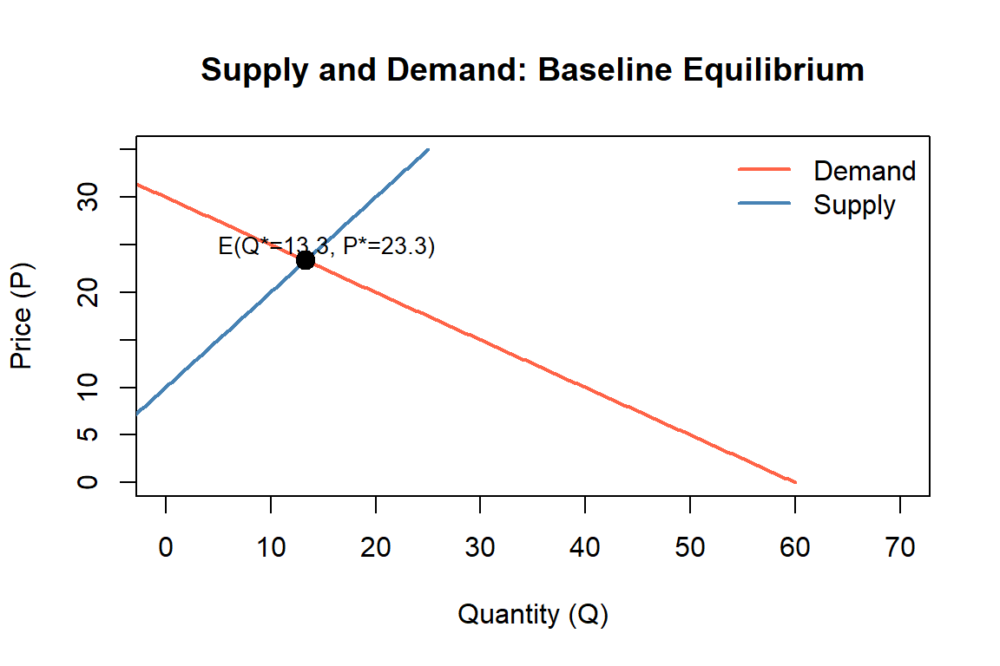
23.3.5 Effect of Changing the Demand Intercept \(a\) (∂P*/∂a > 0)
When \(a\) increases, demand shifts rightward — at every price, consumers want more. Both equilibrium price and quantity rise.
a_values <- seq(40, 80, by = 5)
b <- 2; c <- 10; d <- 1
P_eq <- (a_values + c) / (b + d)
Q_eq <- (a_values * d - b * c) / (b + d)
par(mfrow = c(1, 2))
# --- Supply-Demand shifts panel ---
P_seq <- seq(0, 40, length.out = 200)
plot(NULL, xlim = c(0, 90), ylim = c(0, 40),
xlab = "Quantity", ylab = "Price",
main = expression(paste("Demand shifts as ", italic(a), " increases")))
cols <- colorRampPalette(c("lightcoral", "darkred"))(length(a_values))
for (i in seq_along(a_values)) {
Qd_i <- a_values[i] - b * P_seq
lines(Qd_i, P_seq, col = cols[i], lwd = 1.5)
}
# Supply (fixed)
Qs_base <- -c + d * P_seq
lines(Qs_base, P_seq, col = "steelblue", lwd = 2)
# Equilibrium points
points(Q_eq, P_eq, pch = 19, col = "black", cex = 0.9)
legend("topright", legend = c("Demand (varies)", "Supply (fixed)", "Equilibria"),
col = c("tomato", "steelblue", "black"),
lwd = c(2, 2, NA), pch = c(NA, NA, 19), bty = "n", cex = 0.8)
# --- Comparative statics panel ---
plot(a_values, P_eq,
type = "b", pch = 19, col = "tomato", lwd = 2,
xlab = "Demand Intercept (a)", ylab = "Equilibrium Price (P*)",
main = expression(paste("Comparative Statics: ", italic(a), " and P*")))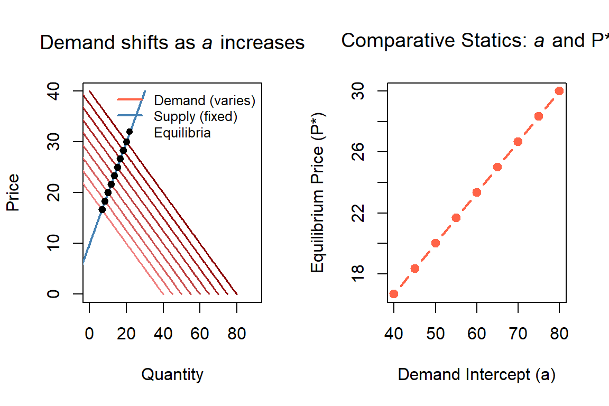
Result: \(\partial P^*/\partial a = 1/(b+d) > 0\). As the demand curve shifts right, the equilibrium price rises. This is confirmed in the left panel: each rightward shift of demand (holding supply fixed) intersects supply at a higher price.
23.3.6 Effect of Changing the Demand Slope \(b\) (∂P*/∂b < 0)
A larger \(b\) means demand is steeper (less price-responsive). This compresses the quantity range, and the equilibrium price falls.
b_values <- seq(1, 5, by = 0.5)
a <- 60; c <- 10; d <- 1
P_eq_b <- (a + c) / (b_values + d)
Q_eq_b <- (a * d - b_values * c) / (b_values + d)
P_seq <- seq(0, 70, length.out = 200)
par(mfrow = c(1, 2))
plot(NULL, xlim = c(-5, 65), ylim = c(0, 70),
xlab = "Quantity", ylab = "Price",
main = expression(paste("Demand slope ", italic(b), " increases")))
cols2 <- colorRampPalette(c("lightcoral", "darkred"))(length(b_values))
for (i in seq_along(b_values)) {
Qd_i <- a - b_values[i] * P_seq
lines(Qd_i, P_seq, col = cols2[i], lwd = 1.5)
}
Qs_base <- -c + d * P_seq
lines(Qs_base, P_seq, col = "steelblue", lwd = 2)
points(Q_eq_b, P_eq_b, pch = 19, col = "black", cex = 0.9)
legend("topright", legend = c("Demand (varies b)", "Supply (fixed)", "Equilibria"),
col = c("tomato", "steelblue", "black"),
lwd = c(2, 2, NA), pch = c(NA, NA, 19), bty = "n", cex = 0.8)
plot(b_values, P_eq_b,
type = "b", pch = 19, col = "tomato", lwd = 2,
xlab = "Demand Slope (b)", ylab = "Equilibrium Price (P*)",
main = expression(paste("Comparative Statics: ", italic(b), " and P*")))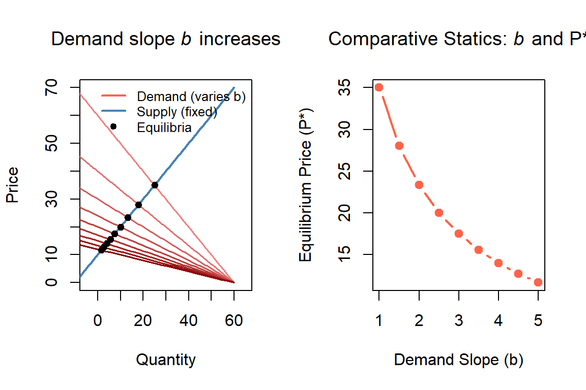
Result: \(\partial P^*/\partial b = -(a+c)/(b+d)^2 < 0\). A steeper demand curve lowers the equilibrium price.
23.3.7 Effect of Changing the Supply Intercept \(c\) (∂P*/∂c > 0)
A larger \(c\) shifts the supply curve leftward (at every price, firms supply less). This raises the equilibrium price.
c_values <- seq(5, 25, by = 2)
a <- 60; b <- 2; d <- 1
P_eq_c <- (a + c_values) / (b + d)
Q_eq_c <- (a * d - b * c_values) / (b + d)
P_seq <- seq(0, 40, length.out = 200)
par(mfrow = c(1, 2))
plot(NULL, xlim = c(-10, 70), ylim = c(0, 40),
xlab = "Quantity", ylab = "Price",
main = expression(paste("Supply shifts as ", italic(c), " increases")))
# Demand fixed
Qd_base <- a - b * P_seq
lines(Qd_base, P_seq, col = "tomato", lwd = 2)
# Supply curves
cols3 <- colorRampPalette(c("lightblue", "darkblue"))(length(c_values))
for (i in seq_along(c_values)) {
Qs_i <- -c_values[i] + d * P_seq
lines(Qs_i, P_seq, col = cols3[i], lwd = 1.5)
}
points(Q_eq_c, P_eq_c, pch = 19, col = "black", cex = 0.9)
legend("topright", legend = c("Demand (fixed)", "Supply (varies c)", "Equilibria"),
col = c("tomato", "steelblue", "black"),
lwd = c(2, 2, NA), pch = c(NA, NA, 19), bty = "n", cex = 0.8)
plot(c_values, P_eq_c,
type = "b", pch = 19, col = "steelblue", lwd = 2,
xlab = "Supply Intercept (c)", ylab = "Equilibrium Price (P*)",
main = expression(paste("Comparative Statics: ", italic(c), " and P*")))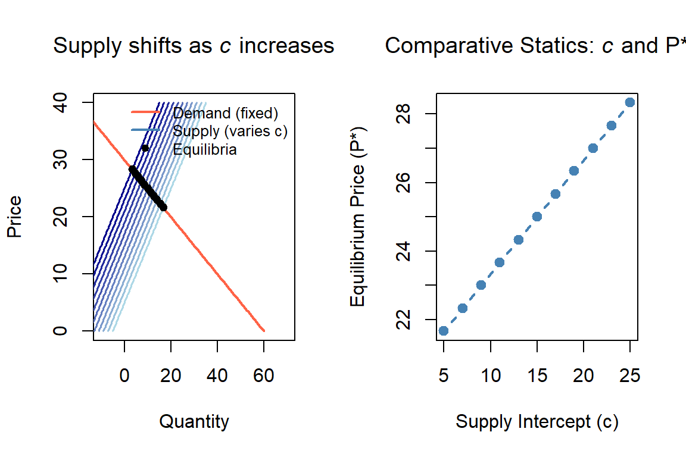
Result: \(\partial P^*/\partial c = 1/(b+d) > 0\). As the supply curve shifts left (higher \(c\)), the equilibrium price rises — a supply reduction drives up prices.
23.3.8 Effect of Changing the Supply Slope \(d\) (∂P*/∂d < 0)
A larger \(d\) means the supply curve is flatter (more price-responsive). This lowers the equilibrium price.
d_values <- seq(0.5, 4, by = 0.5)
a <- 60; b <- 2; c <- 10
P_eq_d <- (a + c) / (b + d_values)
Q_eq_d <- (a * d_values - b * c) / (b + d_values)
P_seq <- seq(0, 40, length.out = 200)
par(mfrow = c(1, 2))
plot(NULL, xlim = c(-10, 70), ylim = c(0, 40),
xlab = "Quantity", ylab = "Price",
main = expression(paste("Supply slope ", italic(d), " increases")))
Qd_base <- a - b * P_seq
lines(Qd_base, P_seq, col = "tomato", lwd = 2)
cols4 <- colorRampPalette(c("lightblue", "darkblue"))(length(d_values))
for (i in seq_along(d_values)) {
Qs_i <- -c + d_values[i] * P_seq
lines(Qs_i, P_seq, col = cols4[i], lwd = 1.5)
}
points(Q_eq_d, P_eq_d, pch = 19, col = "black", cex = 0.9)
legend("topright", legend = c("Demand (fixed)", "Supply (varies d)", "Equilibria"),
col = c("tomato", "steelblue", "black"),
lwd = c(2, 2, NA), pch = c(NA, NA, 19), bty = "n", cex = 0.8)
plot(d_values, P_eq_d,
type = "b", pch = 19, col = "steelblue", lwd = 2,
xlab = "Supply Slope (d)", ylab = "Equilibrium Price (P*)",
main = expression(paste("Comparative Statics: ", italic(d), " and P*")))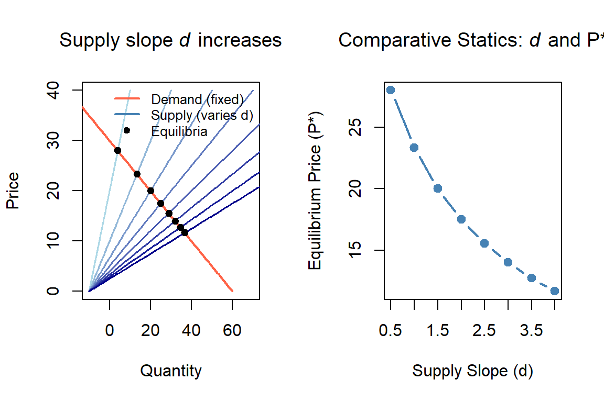
Result: \(\partial P^*/\partial d = -(a+c)/(b+d)^2 < 0\). A more price-responsive supply curve lowers the equilibrium price.
23.3.9 Summary Table of P* Comparative Statics
| Parameter | Economic Meaning | \(\partial P^*/\partial \cdot\) | Sign | Direction |
|---|---|---|---|---|
| \(a\) | Demand intercept (demand level) | \(\frac{1}{b+d}\) | \(+\) | ↑ demand → ↑ P* |
| \(b\) | Demand slope (price sensitivity) | \(-\frac{a+c}{(b+d)^2}\) | \(-\) | ↑ steepness → ↓ P* |
| \(c\) | Supply intercept (supply level) | \(\frac{1}{b+d}\) | \(+\) | ↓ supply → ↑ P* |
| \(d\) | Supply slope (price responsiveness) | \(-\frac{a+c}{(b+d)^2}\) | \(-\) | ↑ elasticity → ↓ P* |
23.4 Additional Comparative Statics Examples (from LBYC121)
23.4.1 Example 1: Demand Shift and Equilibrium (with explicit S&D)
From the course book: \(Q^d = a - 2P\), \(Q^s = 10 + P\). Here \(b = 2\), \(c = -10\) (rewritten: \(Q^s = -(-10) + 1 \cdot P\)), \(d = 1\).
Equilibrium: \(P^* = (a - 10)/3\), \(Q^* = 10 + P^*\).
a_values <- seq(40, 80, by = 5)
b2 <- 2; d2 <- 1
P_eq2 <- (a_values - 10) / 3
Q_eq2 <- 10 + P_eq2
P_seq2 <- seq(0, 30, length.out = 200)
par(mfrow = c(1, 3))
# Supply-Demand diagram with shifting demand
plot(NULL, xlim = c(0, 90), ylim = c(0, 30),
xlab = "Quantity", ylab = "Price",
main = "Demand Shifts (a increases)")
cols5 <- colorRampPalette(c("lightcoral", "darkred"))(length(a_values))
for (i in seq_along(a_values)) {
Qd_i <- a_values[i] - b2 * P_seq2
lines(Qd_i, P_seq2, col = cols5[i], lwd = 1.4)
}
Qs2 <- 10 + d2 * P_seq2
lines(Qs2, P_seq2, col = "steelblue", lwd = 2)
points(Q_eq2, P_eq2, pch = 19, col = "black", cex = 0.9)
legend("topright", legend = c("Demand", "Supply", "Equilibria"),
col = c("tomato", "steelblue", "black"),
lwd = c(2, 2, NA), pch = c(NA, NA, 19), bty = "n", cex = 0.8)
plot(a_values, P_eq2, type = "b", pch = 19, col = "tomato", lwd = 2,
xlab = "Demand Intercept (a)", ylab = "Equilibrium Price",
main = "Demand Shift → P*")
plot(a_values, Q_eq2, type = "b", pch = 19, col = "steelblue", lwd = 2,
xlab = "Demand Intercept (a)", ylab = "Equilibrium Quantity",
main = "Demand Shift → Q*")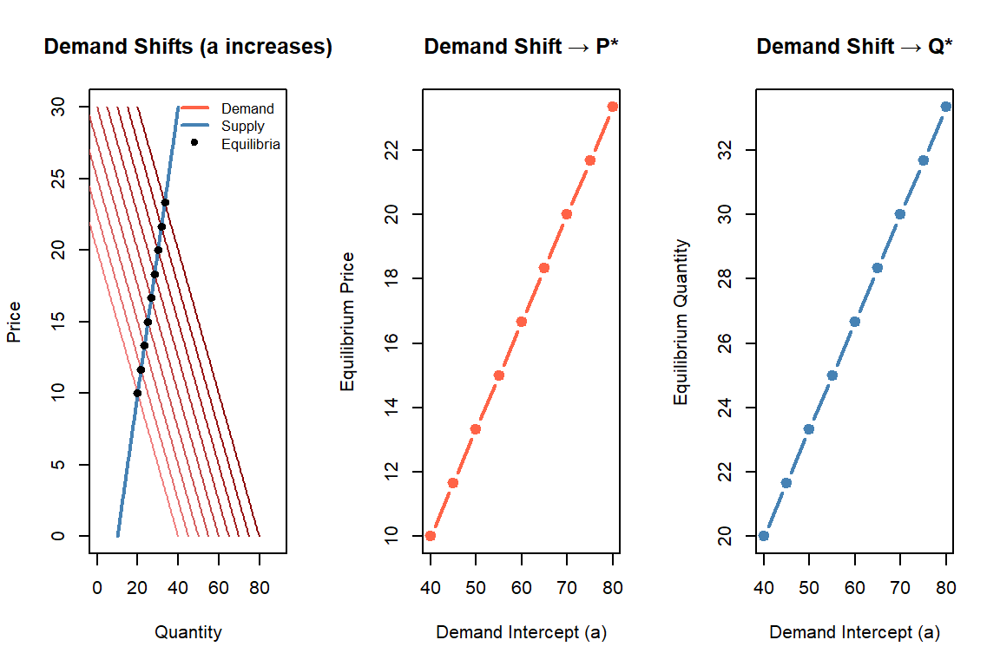
23.4.2 Example 2: Wage Changes and Labor Demand
Labor demand: \(L = 80/w\). As wages rise, labor demand falls.
w_grid <- seq(1, 10, by = 0.5)
L_star <- 80 / w_grid
plot(w_grid, L_star,
type = "b", pch = 19, col = "steelblue", lwd = 2,
xlab = "Wage (w)", ylab = "Labor Demand (L)",
main = "Comparative Statics: Wage and Labor Demand")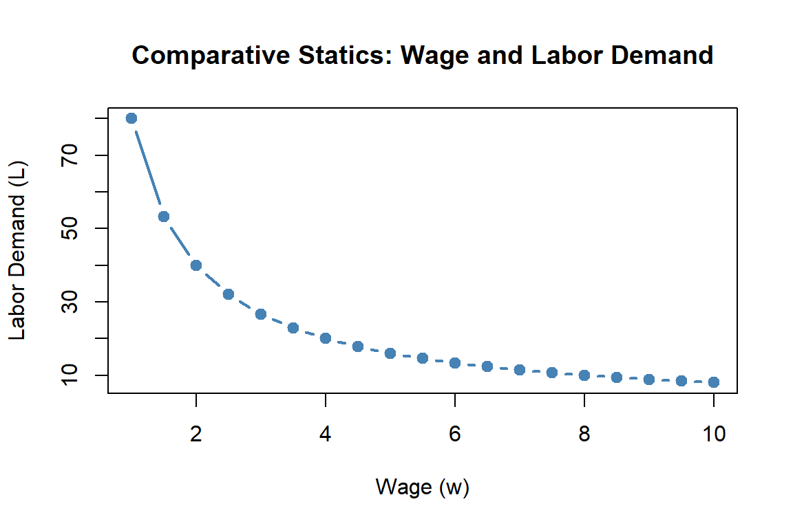
Economic interpretation: \(\partial L / \partial w = -80/w^2 < 0\). Higher wages make labor more expensive; the firm hires less. This is the own-price effect on a factor of production.
23.4.3 Example 3: Technology and Output
Production function: \(Q = A K^{0.4} L^{0.6}\). Hold \(K = 16\), \(L = 25\), vary \(A\).
K3 <- 16; L3 <- 25
A_values <- seq(1, 5, by = 0.25)
Q3 <- A_values * K3^0.4 * L3^0.6
plot(A_values, Q3,
type = "b", pch = 19, col = "darkgreen", lwd = 2,
xlab = "Technology Parameter (A)", ylab = "Output (Q)",
main = "Comparative Statics: Technology and Output")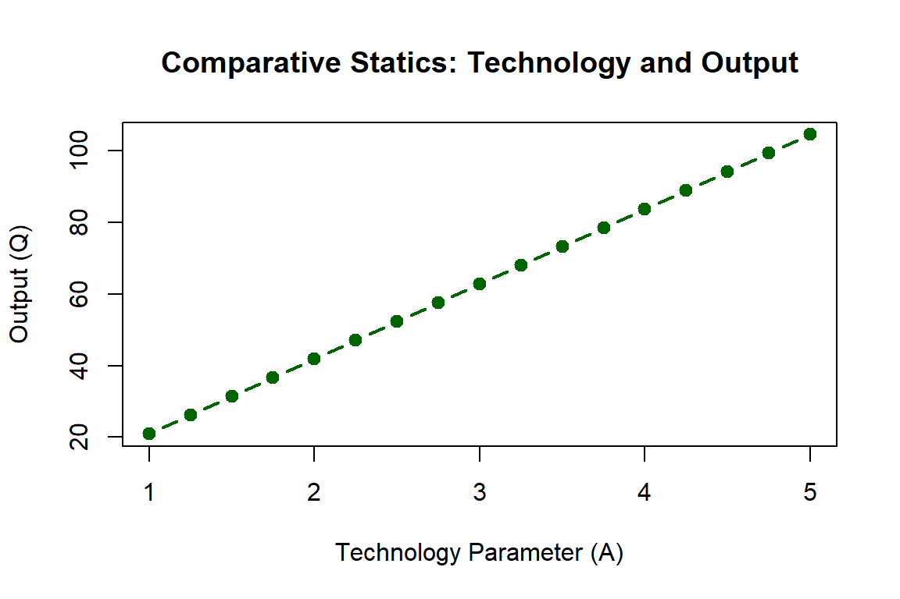
Economic interpretation: \(\partial Q / \partial A = K^{0.4} L^{0.6} > 0\). Technological progress raises output proportionally when inputs are fixed. This is a total factor productivity (TFP) effect.
23.4.4 Example 4: Rental Rate of Capital and Optimal Inputs
Production function: \(Q = 2 K^{0.5} L^{0.5}\), target output \(\bar{Q} = 20\), wage \(w = 4\). Vary rental rate \(r\).
A4 <- 2; Qbar <- 20; w4 <- 4
r_grid <- seq(1, 10, by = 1)
K_star <- 10 / sqrt(r_grid)
L_star4 <- 10 * sqrt(r_grid) / w4
cost_star <- r_grid * K_star + w4 * L_star4
par(mfrow = c(1, 3))
plot(r_grid, K_star, type = "b", pch = 19, col = "steelblue", lwd = 2,
xlab = "Rental Rate (r)", ylab = "Capital (K*)",
main = "r and K*")
plot(r_grid, L_star4, type = "b", pch = 19, col = "tomato", lwd = 2,
xlab = "Rental Rate (r)", ylab = "Labor (L*)",
main = "r and L*")
plot(r_grid, cost_star, type = "b", pch = 19, col = "darkgreen", lwd = 2,
xlab = "Rental Rate (r)", ylab = "Total Cost",
main = "r and Total Cost")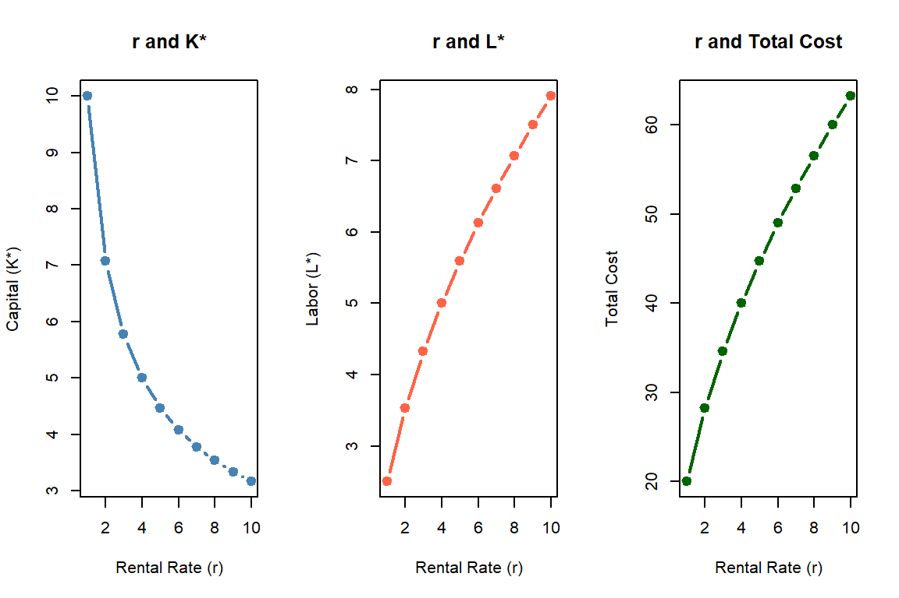
Economic interpretation: As \(r\) rises, capital becomes more expensive so the cost-minimizing firm substitutes toward labor (\(K^*\) falls, \(L^*\) rises). Total cost still increases because no substitution is perfect — the firm is “squeezed.”
23.5 Quick Reference: Key R Syntax Used
| R Code | What It Does |
|---|---|
seq(a, b, by = s) |
Creates a sequence from a to b in steps of s |
numeric(n) |
Creates an empty numeric vector of length n |
for (i in seq_along(x)) |
Loops safely over indices of vector x |
colorRampPalette(c(...))(n) |
Generates n colors between specified colors |
par(mfrow = c(r, c)) |
Sets up a multi-panel plot with r rows and c columns |
lines(x, y) |
Adds a line to an existing plot |
points(x, y) |
Adds points to an existing plot |
legend(...) |
Adds a legend |
expression(paste(...)) |
Renders math-style labels using italic(), bold(), etc. |